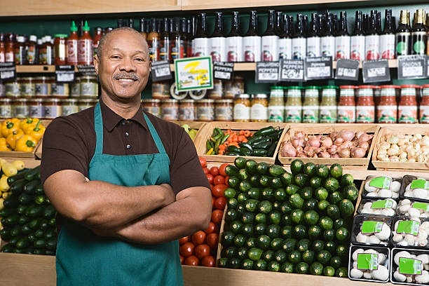

Description of the Target Audience
Business owners and individuals who would like to make contacts and do business on Benin City chamber of commerce.
Personas
Persona 1:
Farmer
Photo:
Fictional Name:
Ronaldo Osazee
Job titles/major responsibilities:
Farm Manager/Grow and sell his produce
Demographics:
35 years old
Married with two kids
Goals and Tasks:
He wants to have a steady client base so he can sell his produce, increase sales and reduce wastage.
Spends his time:
Looking for ways to sell his produce,
At farmers markets selling produce, and
Taking care of his farm, balancing his books..
Persona 2:
Grocery Shop Owner
Photo:

Fictional Name:
Duke Nosa
Job titles/major responsibilities:
CEO/Manages his grocrey Shop
Demographics:
40 years old
Married
Father of two children
Goals and Tasks:
He is very hard working and always ensures his shop is open with the right stuff.
Spends his
time:
Looking for ways to collaborate with local farmers,
Buying and ordering inventory, and
Balancing his books.
Scenarios
Scenario #1
A member of the chamber looking to find local produce to buy. Events would be posted as to where they will be selling produce as well as contact information for those in the business of selling produce.
Scenario #2
A member of the chamber checking out events of where they can network with others.
Scenario #3
Someone from the community looking for a way to contact the Chamber.
Scenario #4
An event coordinator looking to post their event
Scenario #5
A business owner looking to collaborate with another business owner